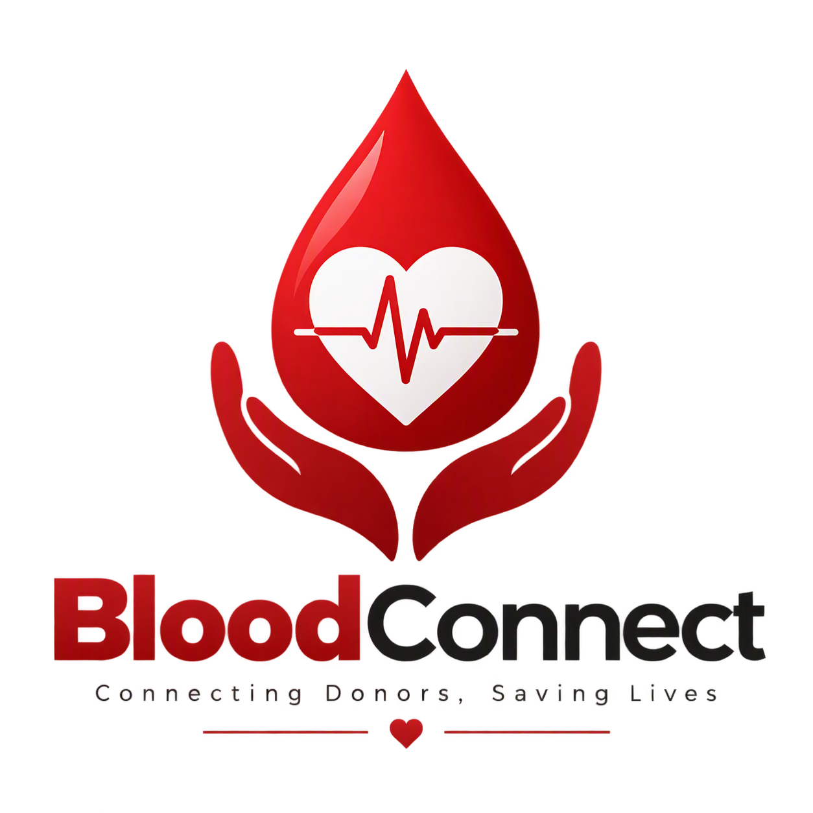

BloodConnect is a modern Blood Bank Management System designed to bridge the gap between blood donors and recipients. The platform provides a reliable and user-friendly way to connect individuals who are willing to donate blood with those who need it during emergencies. Through BloodConnect, donors can easily register themselves, while users can search for suitable donors based on blood group and location. The system also promotes donor privacy by sharing contact information only through secure contact requests. Our mission is to create a community-driven platform that encourages voluntary blood donation, raises awareness about its importance, and ensures that life-saving blood is accessible when it is needed the most. By leveraging technology, BloodConnect aims to make the process of finding and connecting with blood donors faster, safer, and more efficient.
Sign up by providing your blood group, city, and contact details to join the donor network.
Users can search for available donors based on blood group and location during emergencies.
Donor information remains private and is shared only through the contact request system.
Use the compatibility checker to find suitable donor blood groups quickly and accurately.
Connect donors with recipients efficiently and help provide timely support during critical situations.
Every blood donor is a real-life hero. By registering as a donor, you can help patients undergoing surgeries, accident victims, and individuals battling serious illnesses. A few minutes of your time can make a lifelong difference to someone in need. Join BloodConnect today and become part of a community dedicated to saving lives through the gift of blood donation.
Search for registered blood donors based on blood group and city. Our donor network helps connect patients with suitable donors quickly and efficiently.
Not sure which blood groups are compatible? Use our Blood Compatibility Checker to quickly find compatible donor blood groups for a patient in need. This feature helps users understand blood compatibility and locate suitable donors more efficiently during emergencies.
Blood donation is a simple yet powerful act that can save lives. Every day, patients undergoing surgeries, accident victims, cancer patients, and individuals with serious medical conditions rely on donated blood for survival. Since blood cannot be manufactured artificially, voluntary donors play a vital role in ensuring a continuous and reliable blood supply. By donating blood, you are not just giving a few minutes of your time, you are giving someone a second chance at life.